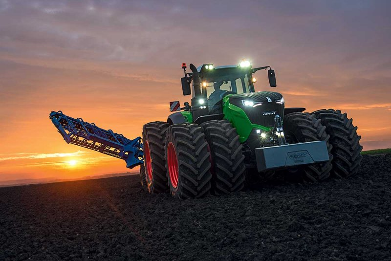

PEDRO HENRIQUE TURAZZI
Agronomia

Universidade Estadual Do Oeste Do Paraná (UNIOESTE)
Agronomia é um campo da Gestão Ambiental e abarcado pelas ciências agrárias, sendo uma área multidisciplinar que inclui subáreas aplicadas das ciências naturais, exatas, sociais e econômicas que trabalham em conjunto visando aumentar a compreensão da agropecuária e aperfeiçoar as práticas agrícolas e zootécnicas, por meio de técnicas e tecnologias em favor de uma otimização da produção dos pontos de vista econômico, técnico, social e ambiental,minimizar o gasto de energia em conformidade com as condições ambientais mutáveis.